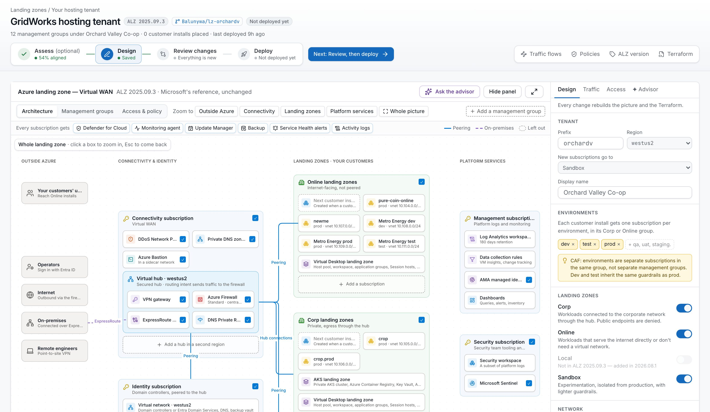
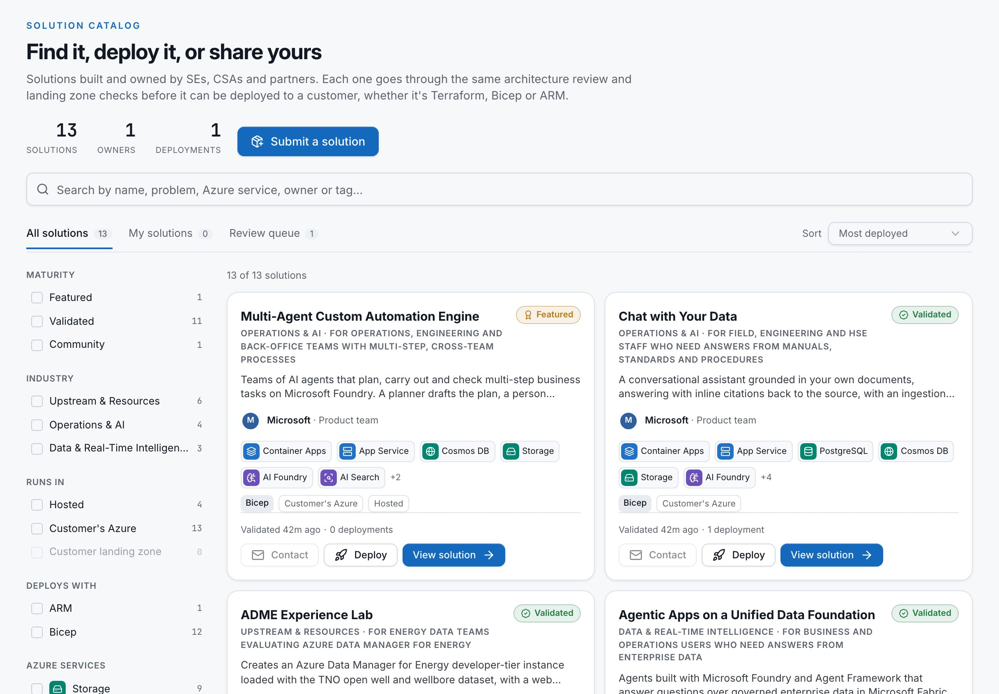
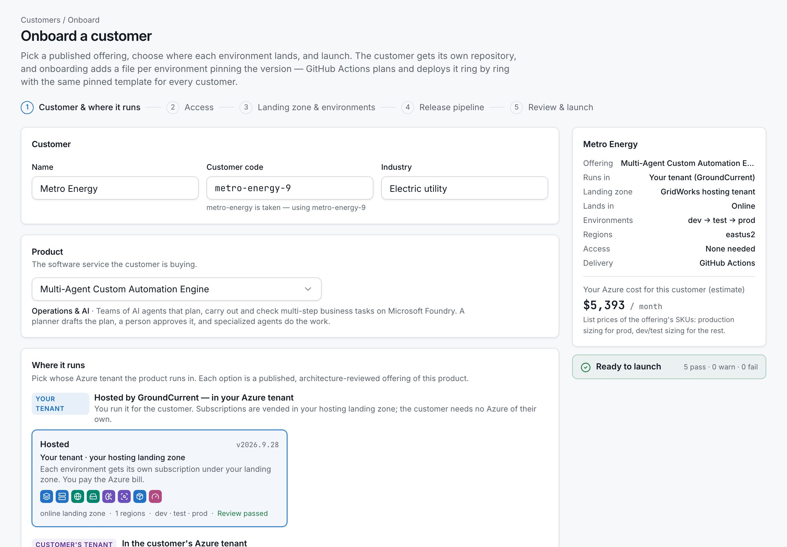
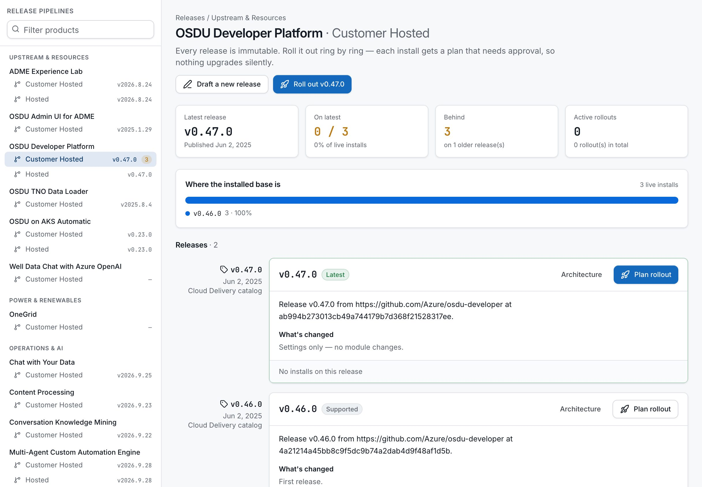
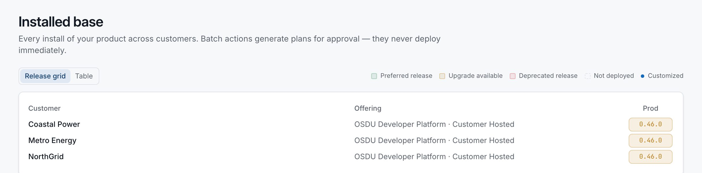
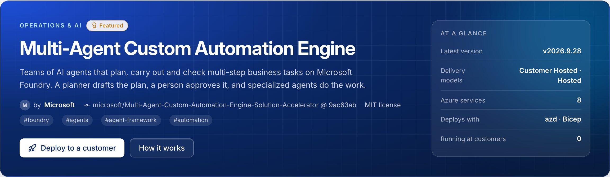

Proven architecture
Reference architectures and patterns as the starting point, drawn from the code the same way every time.
For SEs, CSAs, SSPs and partners
Cloud Delivery turns proven Azure architectures, demos and solution accelerators into reusable offerings you can deploy again and again, across customers.
Build the proof once.Package it.Deploy it again.
The live demo runs real Microsoft accelerators. Nothing to install, nothing to sign up for.
Accelerator → offering
Multi-Agent Custom Automation Engine
v2026.9.28 · pinned to 9ac63ab · Bicep + azd
Same offering, four environments
Show it working in the customer's context, not on slides. Stand up a real environment in the meeting.
Start every engagement from a known-good, reviewed baseline, and hand over something deployable.
Move from interest to PoC to consumption on one path, and see which assets actually land.
Publish what you've built into the same lifecycle, and deliver it the same way every time.
The pattern
Most engagements follow the same pattern.
Then the next customer arrives — and you start over.
Cloud Delivery changes that.
Solve oncePackage onceDeploy many times
Prove the idea fast, on a known architecture and a sample workload.
Capture the architecture, Terraform or Bicep, app code, workflow, docs and configuration.
Define how it's delivered into a customer environment, and review it once.
Into a sandbox, a Microsoft environment, a customer subscription or a landing zone.
Know what was deployed, where, which version is running, and what needs to change.
Start with something proven
Microsoft gives you trusted, reusable assets. Cloud Delivery keeps each one whole, and adds the piece that's usually missing.
Reference architectures and patterns as the starting point, drawn from the code the same way every time.
Application code, Terraform, Bicep, pipelines, scripts and sample data, pinned to a commit.
Prerequisites, configuration, deployment, validation and handoff, alongside the code.
Sellers, architects, engineers, partners and delivery teams each get the part they need.
Diagrams, scenarios, outcomes and the numbered "how it works" stay with the solution.
The asset becomes a versioned offering that deploys the same way across customers and environments.
One platform. Different engagement motions.
Rapid PoCs
ScopeDeployValidateDecide
Start from a reusable baseline, tailor the customer-specific pieces, test the hypothesis, and leave with a clear next decision.
Live demos
Predefined infrastructure, sample data and demo flows, so engineers spend the meeting on the customer's problem, not on setup.
Solution accelerators
All treated as one reusable product.
Workshops
Start with the customer problem, move into architecture and design, and finish with something running in their subscription.
The abstraction is the product
Terraform, Bicep, ARM, GitHub Actions, landing zones, subscriptions, policy and networking all still exist. Cloud Delivery sits above them, and maps your intent onto Azure.
“Which Terraform module do I run?”
“Deploy this offering for this customer.”
What you work with
What it handles for you
Architecture diagrams explain the pattern.
Code proves the pattern.
Cloud Delivery makes the pattern repeatable.


From architecture to running environment
Understand where the workload can run: subscriptions, landing zones, identity, networking, policy and governance. Design an Azure landing zone from Microsoft's library, see real traffic paths, then deploy it.

Capture the reusable workload: architecture, code, documentation and value. Import a GitHub repo and it's pinned, inspected and mapped to Azure services, then reviewed before anyone can deploy it.

Define how it's deployed: architecture choices, SKUs, regions, networking, dependencies and the inputs each customer provides. One product can have several delivery models.
Deploy the offering into a real environment through repeatable infrastructure and pipelines. The customer gets their own repository, and onboarding is a pull request.

Version the solution and move customers forward safely, ring by ring. Every install gets a plan that waits for approval, so nothing upgrades silently.

See what's deployed, where it runs, which version it's on, and what needs attention, across every customer.

Customer-specific, without becoming customer-bespoke
A reusable accelerator shouldn't mean every customer gets an identical environment, and customizing shouldn't mean rebuilding. Cloud Delivery keeps the reusable product apart from each customer's configuration, so every customer is an instance of the pattern, not a new engineering project.
Product · v2026.9.16
Real-Time Intelligence for Operations
Event Hubs · Fabric Eventhouse · Activator · Data Agent
Use the right starting point
Every one is a Microsoft open-source project with deployable code, imported at a pinned commit and reviewed. Where an accelerator was built for another industry, its page says so, and shows how it adapts to energy.
Agent and AI application patterns on Microsoft Foundry.
Fabric foundations, live telemetry and operational intelligence.
Energy and subsurface patterns on OSDU and Azure Data Manager for Energy.
Landing zones, networking, identity and governance, from Microsoft's Azure Landing Zones library.
Bring your own baseline: point at a Terraform, Bicep or ARM repo and it's inspected, mapped and reviewed.
Partners publish what they've built into the same lifecycle, with owners and trust levels.

Move from proof to consumption
A successful engagement shouldn't disappear into somebody's GitHub repo. Cloud Delivery captures what worked, and makes it the starting point for the next customer.
Build once. Learn every time.
Every deployment makes the accelerator better, because you can finally see what happens after the demo.
Which accelerators are actually used?
Which turn into customer deployments?
How long does a deployment take?
Which versions are customers running?
Which assets drive Azure consumption?
Where do teams keep customizing the same thing?
Start with an existing accelerator, or package the one you've built